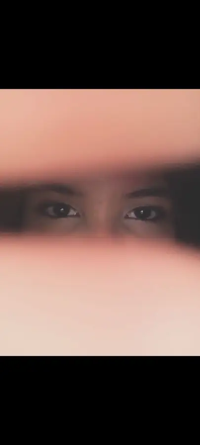

JOÃO × SOPHIA — 11.06.2026
EU FIZ ISSO PRA VOCÊ.
Não é só um site. É um cantinho nosso, feito para guardar aquilo que eu nunca quero esquecer.
11.06.2026JOÃO + SOPHIAFEITO COM AMOR ♥
rola devagar ↓
O COMEÇO DO NOSSO CAPÍTULO
11 DE
JUNHO.
0DIAS
00HORAS
00MINUTOS
00SEGUNDOS
“Antes de mostrar nossas fotos, eu queria que você lembrasse de uma coisa: cada momento com você virou parte de mim.”
ESSA HISTÓRIA AINDA ESTÁ SÓ COMEÇANDOAGORA SIM, AS NOSSAS MEMÓRIAS
NOSSA
galeria.
As fotos ficam aqui, separadas da tela inicial. Um lugar só para nossos momentos.
 UM DOS NOSSOS MOMENTOS
UM DOS NOSSOS MOMENTOS GUARDADO AQUI
GUARDADO AQUI
JOÃO × SOPHIA“Tem gente que chega e muda o dia. Você chegou e mudou meu mundo inteiro.”
E EU ESCOLHERIA VOCÊ DE NOVOCOISAS QUE EU AMO EM VOCÊ
MIL MOTIVOS.
Alguns aqui.
Seu jeito
Você faz os momentos simples virarem os que eu mais quero lembrar.
Seu sorriso
É o tipo de coisa que eu poderia olhar por horas e ainda achar pouco.
Nós dois
Com você eu não quero só momentos. Quero história, capítulos e continuação.
Sua presença
Você tem um jeito de deixar tudo mais leve só por estar perto.
Seu coração
Eu amo quem você é quando ninguém está olhando.
11 de junho
O dia que ganhou outro significado porque passou a ser o nosso.
ME
LEVA
LEVA
A NOSSA TRILHA
ME LEVA.
Delacruz. Aperta o play e continua descendo. Essa é a trilha desse cantinho.
APERTE PLAY PARA OUVIR
ABRE QUANDO QUISER
TRÊS
cartinhas.
Quando sentir saudade
Lembra que em algum lugar eu provavelmente também estou pensando em você. Distância nenhuma é maior que o espaço que você já ocupa em mim.
Quando estiver triste
Eu queria poder guardar todos os seus dias ruins pra você não precisar passar por eles. Quando eu não puder resolver, quero pelo menos estar do seu lado.
Quando duvidar de nós
Volta aqui. Olha nossas fotos. Lembra de 11 de junho. E lembra que eu continuo escolhendo você.
SE EU PUDESSE ESCOLHER DE NOVO...
SERIA
VOCÊ.
Entre todas as pessoas, todos os caminhos e todas as vidas… eu ainda escolheria você. Sempre você, Sophia. ♥
— João